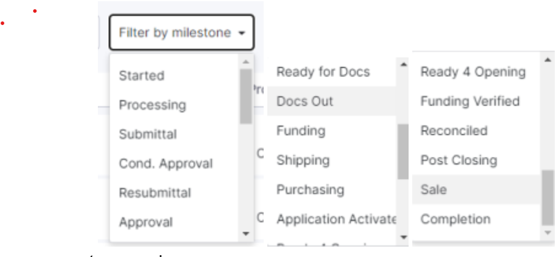
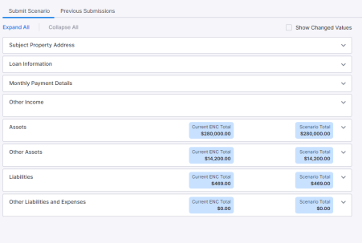

SEARCH,FILTER BY MILESTONE,SUBMIT SCENERIO
Search
- User can search the loans by Loan number, Purpose and Borrower name in the pipeline
Filter by Milestone
- User can filter the loans by milestone using Filter by milestone option in the pipeline
- On click on reset filter, user will be able to remove the selected filter and pipeline will be refreshed.
- 
Submit scenario
- User can see and modify the editable field from the below listed accordions
- subject property details,
- Loan information,
- Monthly payment details,
- Income,
- Other income,
- Asset,
- Other asset,
- Liabilities and
- Other liabilities
- User can change the scenario value and should be able to run DU/LPA/Both DU&LPA
- User should be displayed with the result for DU/LPA/Both DU&LPA ● Expand All /Collapse All button helps to expand and collapse the accordions
- If click on show changed value checkbox, the updated scenario field values will be displayed
- When the mandatory fields are empty if the user clicks on run button missing information popup will be displayed
- On click of accordion user should be able to view the missing fields indicated with Red Outline on it with Missing Icon
